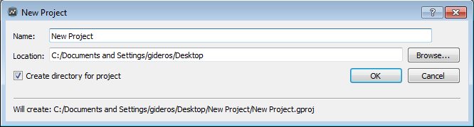
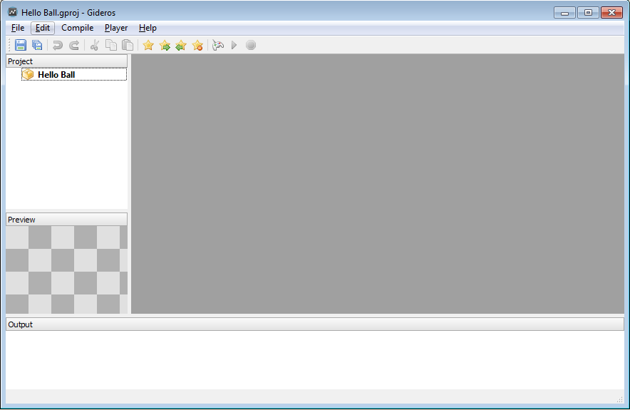
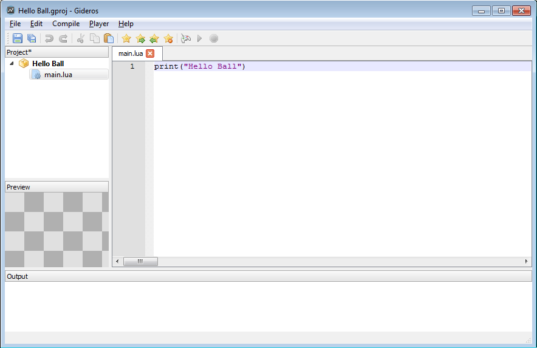
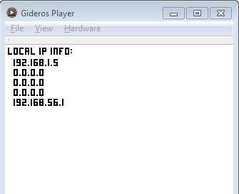
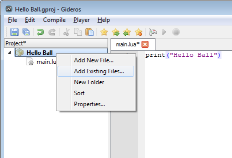
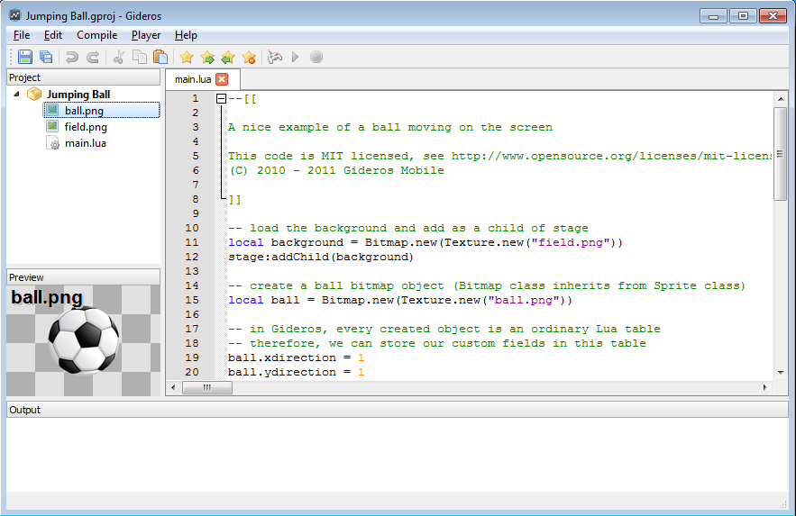

Getting Started
Creating New Project
First open Gideros Studio. Then create a new project from “File→New Project” menu. Name your project “HelloBall”:

Here is our development environment where you create/manage assets and run your code:

Your First Code
Right click the project name at Library and select “Add New File…” to add your first Lua code:

Name your file “main.lua” and click OK.

Now double-click main.lua and write
print("Hello Ball")

Running in Gideros Player
At the first part of this tutorial, we just want to run our code in “Gideos Player” and print “Hello Ball” to the console.
Now select “Player→Start Local Player” to start Gideros Player.

After “Gideros Player” opens, the start and stop icons become enabled.

This means “Gideros Studio” connects to “Gideros Player” and ready to upload your code and assets and then run the project. Press start button (or select “Player→Start” from main menu) to run the project:

Now you see the output of your project at the “Output” panel.
Adding Assets
Now let’s add some images to our asset library. Download field.png and ball.png and copy these images to your project directory. Then, right click the project name at Library and select “Add Existing Files…” to add your image files to the project.
{kind=link}
{kind=link}

More Code
And then write the code below:
local background = Bitmap.new(Texture.new("field.png"))
stage:addChild(background)
local fruit = Bitmap.new(Texture.new("ball.png"))
fruit.xdirection = 1
fruit.ydirection = 1
fruit.xspeed = 2.5
fruit.yspeed = 4.3
stage:addChild(fruit)
function onEnterFrame(event)
local x = fruit:getX()
local y = fruit:getY()
x = x + (fruit.xspeed * fruit.xdirection)
y = y + (fruit.yspeed * fruit.ydirection)
if x < 0 then
fruit.xdirection = 1
end
if x > 320 - fruit:getWidth() then
fruit.xdirection = -1
end
if y < 0 then
fruit.ydirection = 1
end
if y > 480 - fruit:getHeight() then
fruit.ydirection = -1
end
fruit:setX(x)
fruit:setY(y)
end
stage:addEventListener(Event.ENTER_FRAME, onEnterFrame)

After pressing start, you’ll have a nice ball moving around and bouncing from the edges:

Running on iPhone Player
Build and install the GiderosiPhonePlayer XCode project (GiderosiPhonePlayer.zip) comes with the installation. You need to be an approved Apple Developer for iOS and need to install the XCode with iOS SDK.
After installing GiderosPlayer to your iPhone, open the player and enter the IP of your iPhone from the menu “Player→Player Settings”.

When the Start and Stop buttons appear enabled, press Start to run your code on iPhone.